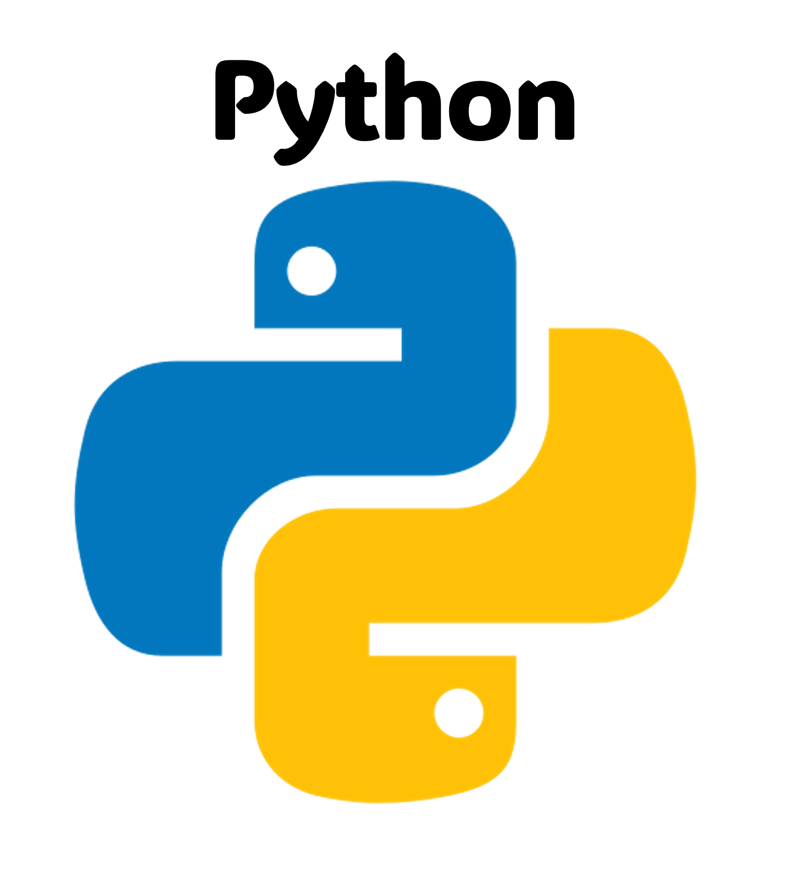
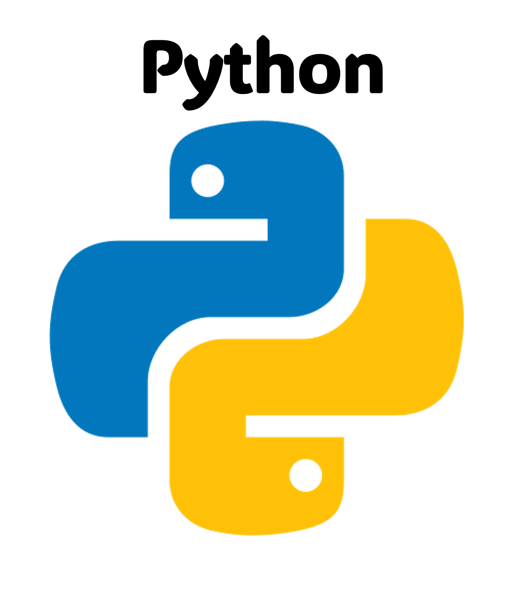
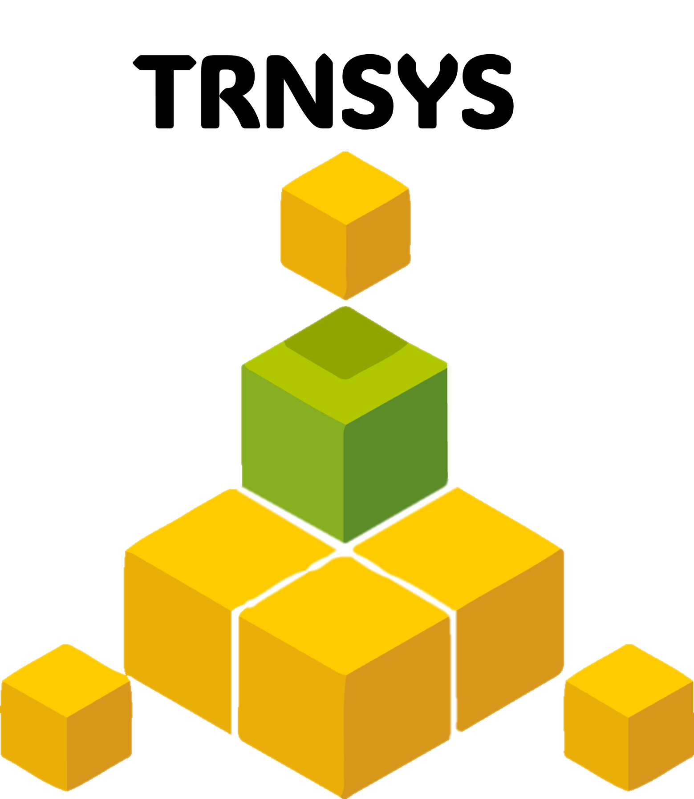
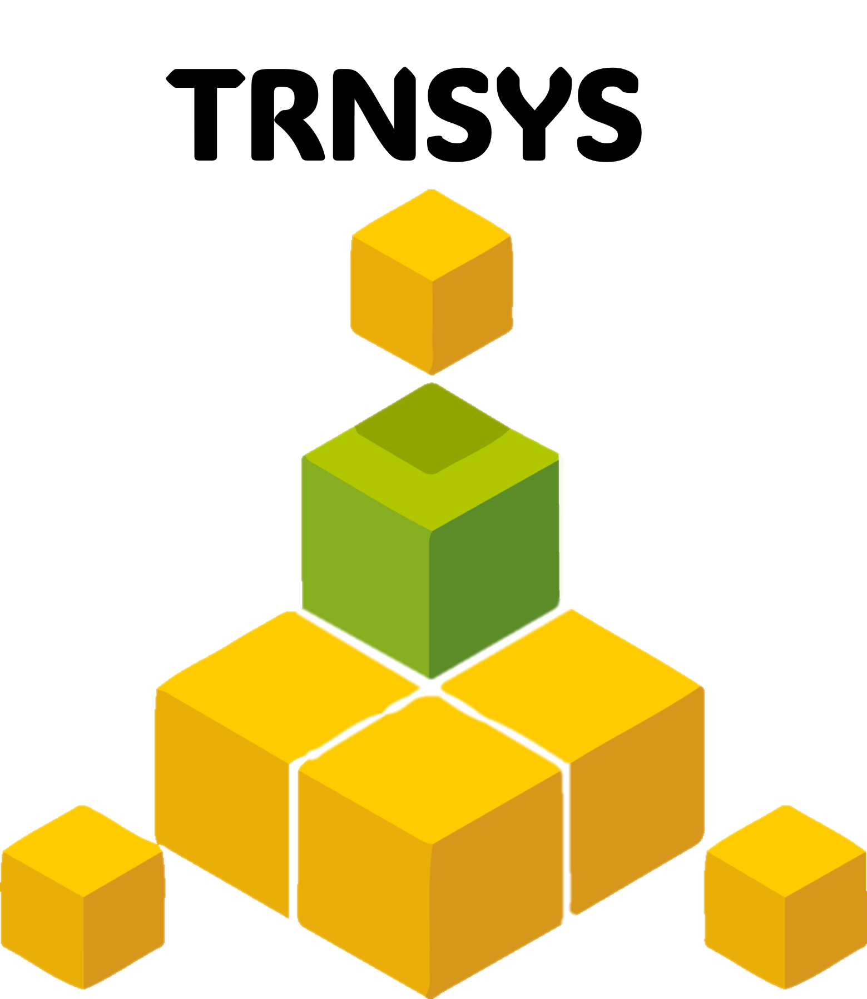

Ingeniera Industrial & Analista de Datos
¡Encantada! Soy Lucía Herrero. He creado esta web para poder mostrar mi portfolio y para que, quien esté interesado, pueda comprender un poco mejor mi trayectoria profesional y educativa, y mis habilidades.
En esta primera sección os hablaré de mí desde una perspectiva más humana y literaria, para quien quiera ver asomar a mi lado más artístico. Y después, en las siguientes pestañas, os describiré de una manera más práctica mi recorrido, y os mostraré mis primeros proyectos.
Si veis algún fallo en la web, no dudéis en decírmelo. Estos son mis primeros pinitos con la programación, así que habrá un montón que mejorar. ¡Espero que os guste!
7 de noviembre de 1997, Oviedo, Asturias. Amanece bajo un cielo frío y gris, como es costumbre. Cientos de nubes abrazan la ciudad con la típica serenidad de un otoño asturiano. No es el clima idóneo para que un girasol crezca, pero sí es el escenario perfecto para la llegada de una niña que, aunque nace en silencio, trae consigo una promesa: la de poner el mundo patas arriba.
Siempre he sido curiosa por naturaleza. Nunca me he conformado con saber cómo ocurren las cosas, sin buscar después un por qué. Quizás por eso el camino de las ciencias me parecía el más atractivo.
Con mis ganas insaciables de aprender y mi ambición por superarme constantemente, decidí estudiar ingeniería industrial a pesar de las críticas que me encontraba sobre su dificultad (puede que incluso me motivasen más a hacerlo). Amé mi decisión durante los 4 años del Grado, ya que me sentía en mi salsa. Aquí no había lugar para "conocimientos por imposición". Todo llevaba a un complejo razonamiento lógico, que se integraba a la perfección con mi manera de pensar. Conseguí ser de las mejores estudiantes de la promoción, lo que me llevó a conseguir algunos reconocimientos de excelencia académica como varias matrículas de honor y una beca de colaboración con la Universidad de Oviedo.
Después continué mis estudios con el Máster Habilidante de Ingeniería Industrial, en la Universidad Politécnica de Madrid. El segundo año lo cursé en Estocolmo, con el programa Erasmus (el mejor año de mi vida). Y al volver, supuestamente con todos los estudios terminados, me quedé en un limbo en el que brotaban dudas por todos lados. No tenía claro a qué quería dedicarme concretamente, y con mi primera experiencia profesional, comencé a plantearme si había merecido la pena estudiar una de las carreras más duras, e invertir 6 años de mi vida en ella, para acabar haciendo tareas que sabría hacer perfectamente cuando estaba en el instituto, con el mismo sueldo de otra persona que ha empezado a trabajar sin estudios.
Esta es una situación por la que, tristemente, estamos pasando muchos jóvenes en España. No se está valorando ni explotando nuestro talento.
Recuerdo una conversación con mi manager cuando empecé mi segundo trabajo: "Siento que hay algo que me impide brillar", le dije. Concluimos en que simplemente necesitaba más tiempo, aunque yo no estaba muy convencida de que fuese solo eso. Y tras acumular 3 años de experiencia profesional, decidí parar. Me di cuenta de que estaba aprendiendo mucho, estaba adquiriendo un montón de habilidades blandas, estaba creciendo incluso más como persona que como profesional. Y justo eso es lo que me ayudó a saber que necesitaba parar. Porque seguía sin brillar, y ya no era cuestión de tiempo, sino que no estaba yendo por mi camino. Hoy estoy tremendamente agradecida de aquella arriesgada decisión que muchos no entendieron, porque he vuelto a conectar con mi brillo. Mi inquietud me hacia querer acercarme más a las nuevas tecnologías, mi innovación quería que persiguiese el camino más rompedor, ahondar más en los datos con los que trabajaba y poder dedicar más tiempo a trabajar con ellos para tomar decisiones de gran relevancia para el negocio. No simplemente hacer lo que me decían, sino también poder influir de una manera optimizada. Y ahí me di cuenta de que debía sumergirme en el mundo de los datos.
2024 - Presente
PROFESSIONAL STATUS: This Data Analytics Bootcamp develops professionals with robust skills in data analysis and visualization. Graduates will acquire the ability to interpret complex datasets, apply statistical and mathematical techniques, and leverage Machine Learning and AI to drive insights. Through hands-on projects, they’ll be adept at transforming data into strategic decisions, making them valuable assets for both large corporations and startups. CONTENTS: - Fundamentals of mathematics and statistics - Databases - Programming and Data manipulation - Data Analysis and Visualization - Machine Learning, Big Data and AI
2022 - 2024
ROLE OVERVIEW:
I was responsible for overseeing quality processes in a cutting-edge manufacturing project for electrical devices, focusing on process design, optimization, and validation in challenging environments, as a clean room.
KEY RESPONSIBILITIES:
2021 - 2022
ROLE OVERVIEW:
I worked within a multicultural team to analyze clients' business models and develop strategies to enhance their operations through new technologies.
KEY RESPONSIBILITIES:
2021
PROFESSIONAL STATUS: This course provides a comprehensive exploration of digital transformation strategies and technologies, focusing on how businesses can leverage digital tools to innovate, improve efficiency, and stay competitive. Participants will gain hands-on experience with digital technologies, learn to develop digital strategies, and understand the impact of transformation on various business functions. CONTENTS: - Digital transformation fundamentals - Strategic development and Business Models - Customer experience and Engagement - Data Analytics and Business Intelligence - Technology infrastructure - Change management and Innovation
2019 - 2021
1 year in Erasmus program within the 2 years Master's Degree in UPM PROFESSIONAL STATUS: This Master’s program equips professionals with a balance of engineering and leadership skills, it enables professionals to adapt to various roles and drive technological advancements within the industrial sector. It emphasizes both technical expertise and strategic management, preparing graduates to solve complex problems, make critical decisions, and lead innovation in the industry. CONTENTS: - Electrical, Electronic, and Control engineering - Mechanical and Thermal engineering - Industrial Processes and Management - Energy and Environmental engineering - Innovation and Communication
2019
ROLE OVERVIEW:
As a Project Engineering Intern, I worked on both client and internal projects. I participated in the development phase of a client’s escalator design and contributed to an internal automation project for the company’s design tool.
KEY RESPONSIBILITIES:
2018
ROLE OVERVIEW:
As a Project Engineering Intern, I was involved in the project development phase for solar tracker systems, honing skills in design optimization, structural analysis, and technical problem-solving to support successful renewable energy solutions.
KEY RESPONSIBILITIES:
2015 - 2019
PROFESSIONAL STATUS: This Degree provides both scientific and technological knowledge to versatile professionals who may satisfy the needs of the companies within the field of industrial technologies, by solving problems and taking decisions with critical reasoning. CONTENTS: - Mathematics and numerical analysis - Mechanical and thermal engineering - Electrical and Electronics engineering - Materials and manufacturing - Business and project management


 



 
